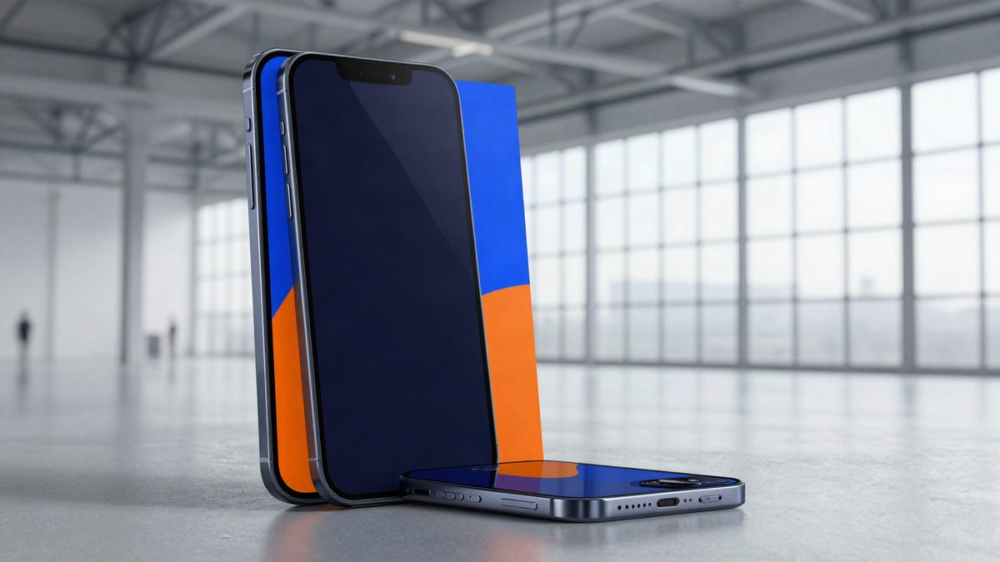

Apple je u trećem tromjesečju zaradio polovicu svjetske prodajne zarade od pametnih telefona, iako Samsung prodaje više uređaja

Prema Counterpoint Researchu, Apple je u trećem tromjesečju ostvario rekordnih 50 % svjetskih prihoda od prodaje pametnih telefona. Po broju prodanih uređaja Samsung je i dalje prvi s 22 %, a Apple drugi s 21 %. Prosječna cijena iPhonea popela se na 1031 dolar, 19 % više nego lani.
Apple je u trećem tromjesečju ostvario rekordnih 50 % svjetskih prihoda od prodaje pametnih telefona, a Counterpoint Research kaže da je to najveći udio u njegovoj povijesti. Po broju prodanih uređaja Apple je ipak drugi, s 21 %, tek malo iza Samsunga s 22 %.
Samsung je po prihodima također drugi, ali s velikim zaostatkom, s 19 % svjetskih prihoda. Slijede Xiaomi sa 6 %, Oppo s 5 % i Vivo s 4 %.
Prosječna cijena iPhonea na rekordu
Prosječna prodajna cijena iPhonea popela se na 1031 dolar, 19 % više nego lani u istom razdoblju. Counterpoint to povezuje s linijom iPhone 18 Pro, koja je podigla cijenu iako je u prodaju stigla tek pred kraj tromjesečja.
Na rast prosječne cijene, kažu analitičari, utjecalo je više stvari:
- više početne cijene modela iPhone 18 Pro,
- izostanak osnovnog modela iPhone 18 u ponudi,
- rujansko poskupljenje starijih modela.
Stabilan obujam isporuka
Counterpoint procjenjuje da je Apple u trećem tromjesečju bio najotporniji brend na tržištu. Obujam isporuka ostao je isti kao lani. Analitičari smatraju da Apple ima dovoljno prostora u određivanju cijena da pokrije poskupljenje memorijskih komponenti i taj trošak prebaci na kupce bez većeg utjecaja na potražnju. Zato je i u zahtjevnoj situaciji na tržištu znatno povećao prihode.
Udjeli po broju uređaja
Po broju prodanih telefona poredak je drukčiji. Samsung vodi s 22 %, Apple ima 21 %, a slijede Xiaomi s 12 %, Oppo s 9 % i Vivo s 8 %. Razlika među dvama vodećima je samo jedan postotni bod, dok je po prihodima Apple više nego dvostruko ispred Samsunga.
Izvor: 3DNews
Povezani članci
 AMD u 4. kvartalu očekuje prihod od 17 milijardi dolara i prvi put prestiže Intel4. studenoga 2026.
AMD u 4. kvartalu očekuje prihod od 17 milijardi dolara i prvi put prestiže Intel4. studenoga 2026. BYD je u Emiratima pokazao robotsku ruku za punjenje snagom do 1000 kW9. studenoga 2026.
BYD je u Emiratima pokazao robotsku ruku za punjenje snagom do 1000 kW9. studenoga 2026.
Lens Technology: Zhou Qunfei je nova najbogatija Kineskinja s 127 milijardi juana28. listopada 2026.